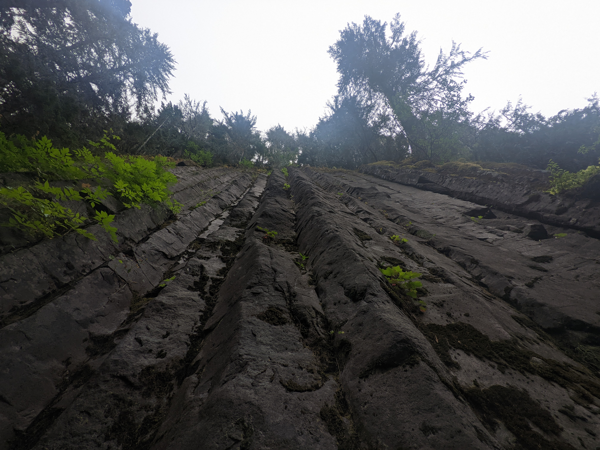

Looking up along rock columns
If you stand at the bottom of these rock columns and look up, you can see trees growing at the top of the cliff.
Tahoma Science
If you stand at the bottom of these rock columns and look up, you can see trees growing at the top of the cliff.